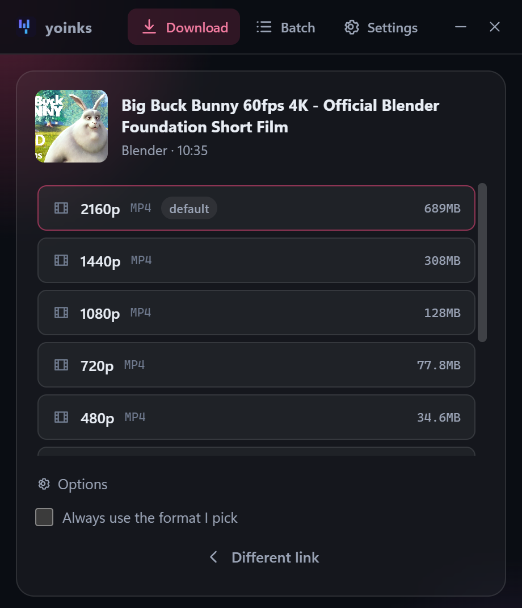
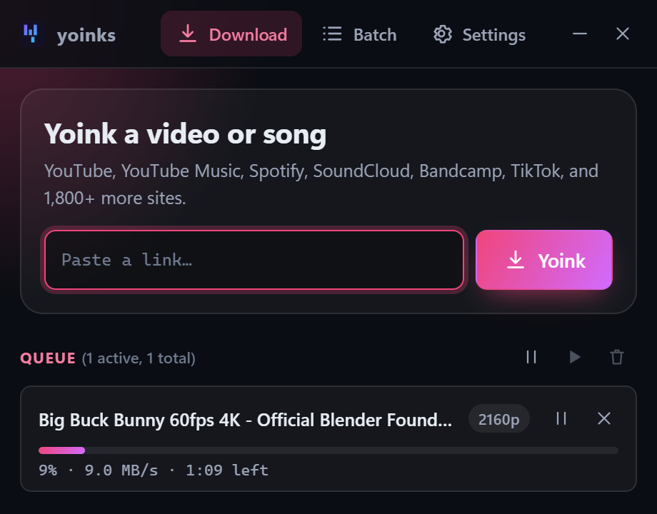
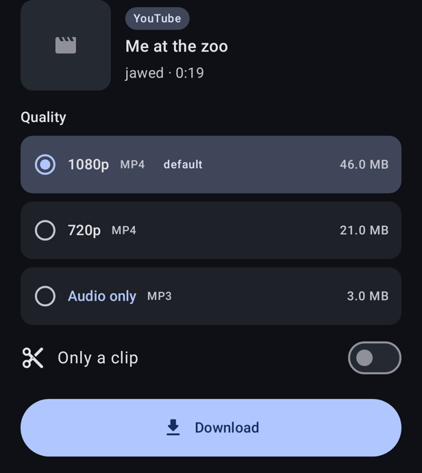
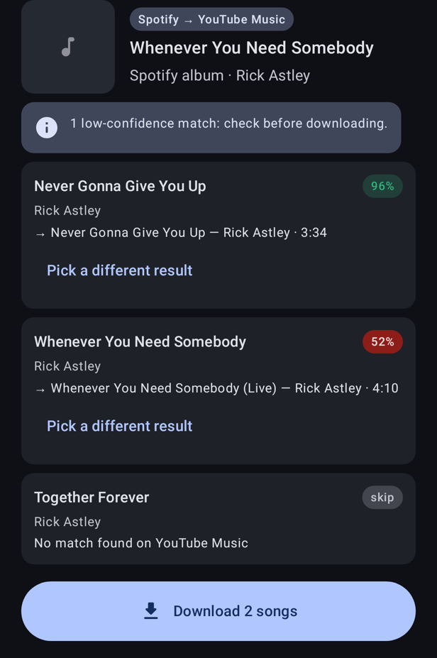
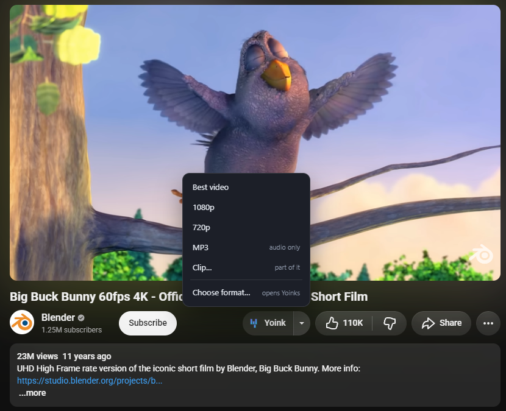

Press kit
Everything you need to write about Yoinks: what it is, the facts, descriptions you can copy, logos and screenshots. Use any of it freely.
About
Yoinks is a free, open source app that saves videos and music from YouTube, TikTok, Instagram, SoundCloud and over 1,800 other sites.
Yoinks is a downloader for people who want to keep media they have the right to keep. Paste a link or type words to search, choose a quality or audio only, and the file is saved. It comes as a Windows and Linux app, a browser extension and an Android app, all built on the open source tools yt-dlp and ffmpeg. It is free, has no ads, no tracking and no accounts.
Yoinks does not host, index or provide any media. It runs on the user's own device and downloads straight from the site the user chooses. Spotify links are matched to the same song on YouTube Music and nothing is taken from Spotify.
Fact sheet
- Name
- Yoinks
- Category
- Video and music downloader
- Platforms
- Windows, Linux (AppImage, .deb, .rpm), Android, and a browser extension for Chrome, Brave, Edge and Firefox-based browsers
- Price
- Free
- Latest version
- See the latest release (changes are on the changelog page)
- License
- MIT (Windows and Linux app, extension). GPL-3.0 (Android app).
- Built on
- yt-dlp, ffmpeg, and the open source yoinks project
- Developer
- mrkraps
- Source code
- github.com/bliper2/yoinks-gui-fork
- Privacy
- No servers, no accounts, no tracking. It only talks to the sites you download from and to GitHub for updates. See SECURITY.md.
- Community
- Discord
Highlights
- Paste a link or search by name, then pick a quality or audio only. Presets like "Music FLAC" make it one click.
- A button on the page next to Like and Share on YouTube, YouTube Music, SoundCloud, TikTok and more, and a right-click option to save every video on a page.
- Playlists: tick the videos you want, keep them in their own folder, or split a long video by its chapters.
- Spotify links are found on YouTube Music and saved with Spotify's title, artist, album and cover.
- On Windows and Linux, convert your own files to MP3, M4A, FLAC, Opus or MP4.
- yt-dlp updates itself, and a health check explains what is wrong when a site changes.
Logos


Screenshots





In the press
Contact
For questions, interviews or review copies, write on the Discord or open an issue on GitHub. Everything is free, so there is nothing to buy to review it.